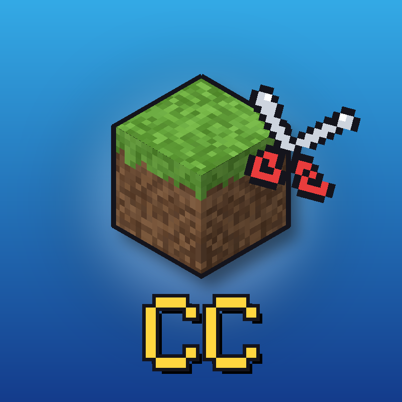

CraftCutsDE Bot uses the YouTube API Services to upload Shorts to the owner's own channel. By using it you agree to the YouTube Terms of Service; see also the Google Privacy Policy and our Privacy Policy.

CraftCutsDE publishes short highlight clips (YouTube Shorts and TikTok videos) from German Minecraft projects such as CraftAttack 14 and Fitnacraft.
CraftCutsDE Bot is a private tool run by the channel owner. It cuts highlights from long videos of creators who allowed clipping, adds subtitles and credit, and uploads the finished clips only to the channel owner's own accounts: YouTube @CraftCutsDE1 and TikTok @craftcutsde. The tool is not offered to other users.
Every clip credits the original creator and links to the original video. Creators who do not want to be clipped can contact us and the clip will be removed immediately.
CraftCutsDE Bot uses the YouTube API Services to upload Shorts to the owner's own channel. By using it you agree to the YouTube Terms of Service; see also the Google Privacy Policy and our Privacy Policy.
Deutsch: CraftCutsDE veröffentlicht kurze Highlight-Clips aus deutschen Minecraft-Projekten. Der CraftCutsDE Bot ist ein privates Werkzeug des Kanalinhabers und lädt Clips nur auf dessen eigene Konten hoch. Jeder Clip nennt den Original-Creator. Auf Wunsch entfernen wir Clips sofort.